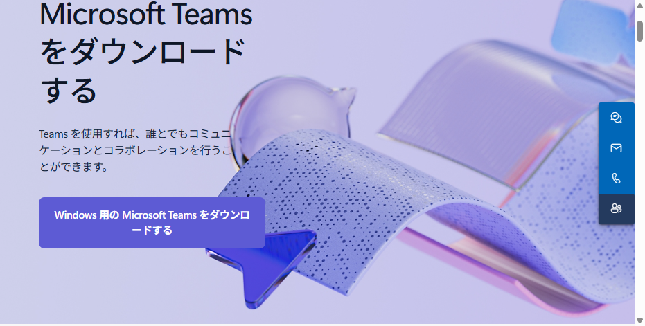
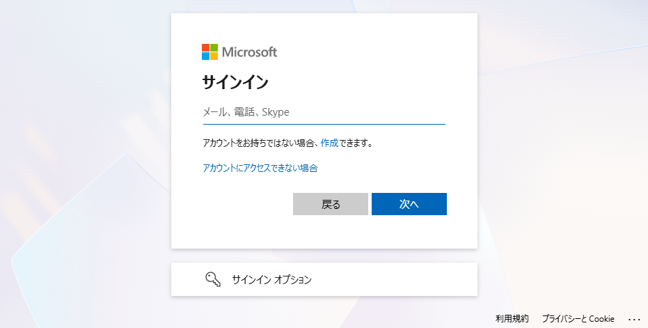
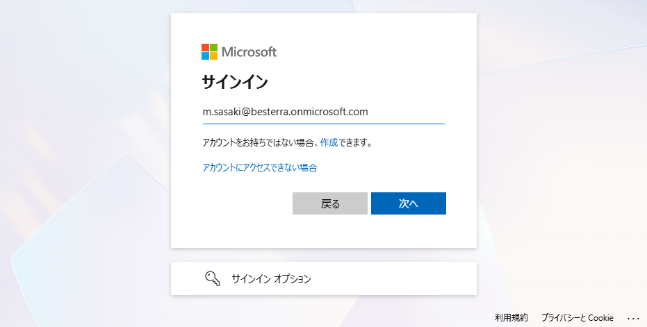
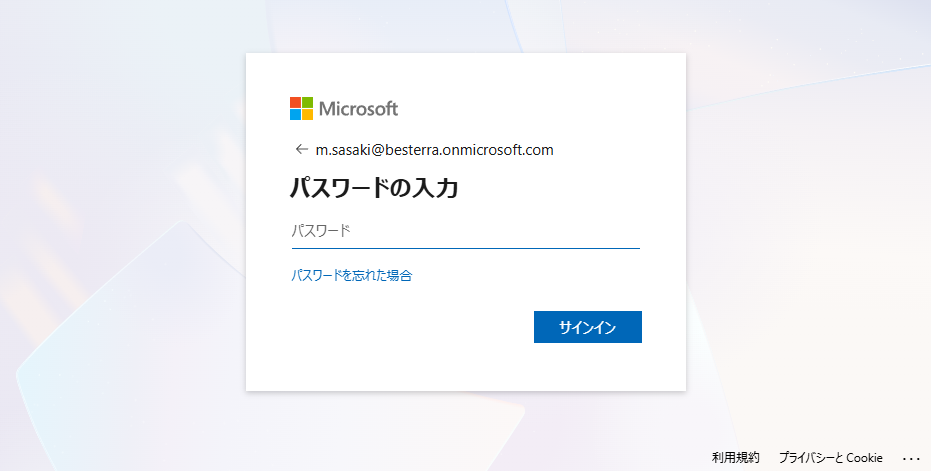
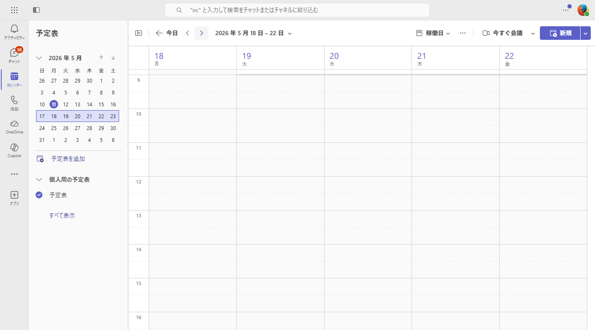

このガイドの目的
ベステラの Microsoft 365 アカウントを発行しましたので、Microsoft Teams をお使いいただけるようになりました。
本ガイドでは、まだ Teams をパソコンに入れていない方が、「アプリの確認 → インストール → サインイン → 画面を開く」 までを順番にできるように、画像付きで解説します。
ここまで終わったら、最後の 「次のステップ」 から本編の Web会議マニュアル に進んでください。
1パソコンに Teams が入っているか確認する
まずは、すでに Teams があなたのパソコンに入っているか確認します。
T
これが Teams のアイコンです
紫色の四角に、白い「T」のマークが目印です。デスクトップやタスクバー、スタートメニューの中にこのアイコンがあれば、すでに Teams は入っています。
確認の手順（Windows の場合）
- キーボードの Windowsキー（左下のWindowsマーク）を押す
- そのまま
teams と入力する
- 検索結果の上のほうに 「Microsoft Teams」（紫のアイコン）が出てくれば、すでに入っています → そのまま 3. サインインする へ
- 出てこなかったら、次の 2. Teams をインストールする へ進んでください
Macの場合は: 画面右上の 🔍（Spotlight）に teams と入力すると同じように検索できます。
2Teams をインストールする
Microsoft 公式サイトから、Teams を無料でダウンロードできます。
ダウンロード手順
- 下のリンクから Microsoft の公式ダウンロードページを開く
- ページ中央の 「Windows 用の Microsoft Teams をダウンロードする」（Macの場合は「Mac 用…」）の青いボタンをクリック
- ダウンロードされたファイル（
MSTeamsSetup.exe など）をダブルクリック
- 「このアプリがデバイスに変更を加えることを許可しますか？」と出たら 「はい」
- インストールが自動で進み、Teams が起動します（数分かかります）

画面1公式ダウンロードページ。青いボタン「Windows 用の Microsoft Teams をダウンロードする」 をクリックします（Mac で開くと自動的に Mac 用に切り替わります）。
ブラウザのまま使うこともできます: インストールせず、Web ブラウザ（Edge / Chrome）からそのまま
teams.microsoft.com にアクセスしてもサインインできます。ただしアプリ版のほうが通知や音質が安定しているので、アプリ版がオススメです。
3サインインする（ID とパスワード）
インストールが終わって Teams が起動すると、サインイン画面が出ます。お送りしたメールに記載の ID とパスワードを使います。
🔑
- ID（メールアドレス形式）
- ※ お送りしたメール本文をご参照ください
例: あなたの名前@besterra.onmicrosoft.com
- 初期パスワード
- ※ お送りしたメール本文をご参照ください
サインインの手順
- サインイン画面のメール欄に、上記の ID を入力
- 「次へ」 をクリック
- パスワード欄に 初期パスワード を入力
- 「サインイン」 をクリック
- 「サインインしたままにしますか？」と聞かれたら 「はい」 をクリック（社用PCのみ）

画面2サインイン画面が開いたら、まずメール欄に ID（@besterra.onmicrosoft.com 形式）を入力して 「次へ」。

画面3正しく入力されると 「次へ」 ボタンが青く点灯します。クリックして進みます。

画面4続いて表示されるパスワード入力画面で、初期パスワード を入力して 「サインイン」。
うまくいかないとき: ID やパスワードのつづり間違いがないかご確認ください（特に大文字小文字、ピリオドの有無）。それでもダメな場合は長谷部までご連絡ください。
4最初の画面を確認する
サインインが完了すると、Teams のメイン画面が開きます。最初に見る場所だけ覚えておきましょう。

画面5サインイン後の画面例（カレンダーを開いたところ）。左サイドバーの縦並びアイコン に Teams のおもな機能が並びます。
左サイドバーの主な機能
- アクティビティ — 自分宛の通知（メンション・返信など）が並びます
- チャット — 1対1や少人数のメッセージのやり取り
- カレンダー（予定表） — 自分の Web会議の予定。会議を開く・参加する画面はここ
- 通話 — 音声・ビデオ通話の発信履歴
- OneDrive — 自分のクラウド保管庫（録画ファイルなどはここに自動で入ります）
最初は「アクティビティ」が開きます。 他の人からメッセージや通知が来ると、ここにバッジ（赤い数字）が表示されます。
うまくいかないとき
長谷部までお気軽に Teams か Slack でご連絡ください。一緒に画面を見ながら解決します。